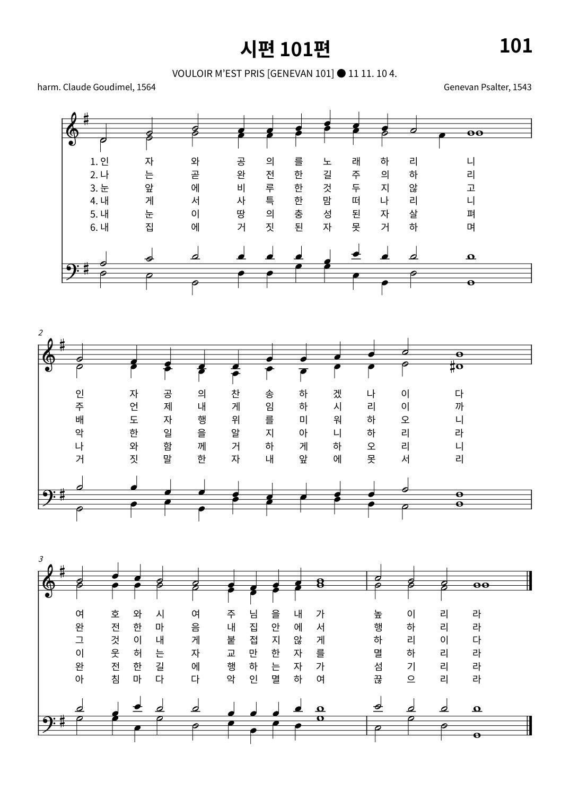

시편 101편
VOULOIR M’EST PRIS [GENEVAN 101] · 11 11. 10 4.
곡조: Genevan Psalter, 1543 · 화성: Claude Goudimel, 1564 · 가사: 개역한글판 시편 101편 편역(AI 초벌 편역판 · 신학 감수 전) · 6절
악보 PDF MusicXML(출력용) MusicXML(반주용, 전주·반복 포함) 개역한글 시편 101편 읽기
악보

가사
1절
인자와 공의를 노래하리니
인자 공의 찬송하겠나이다
여호와시여 주님을 내가
높이리라
인자와 공의를 노래하리니
인자 공의 찬송하겠나이다
여호와시여 주님을 내가
높이리라
2절
나는 곧 완전한 길 주의하리
주 언제 내게 임하시리이까
완전한 마음 내 집안에서
행하리라
나는 곧 완전한 길 주의하리
주 언제 내게 임하시리이까
완전한 마음 내 집안에서
행하리라
3절
눈앞에 비루한 것 두지 않고
배도자 행위를 미워하오니
그것이 내게 붙접지 않게
하리이다
눈앞에 비루한 것 두지 않고
배도자 행위를 미워하오니
그것이 내게 붙접지 않게
하리이다
4절
내게서 사특한 맘 떠나리니
악한 일을 알지 아니하리라
이웃 허는 자 교만한 자를
멸하리라
내게서 사특한 맘 떠나리니
악한 일을 알지 아니하리라
이웃 허는 자 교만한 자를
멸하리라
5절
내 눈이 땅의 충성된 자 살펴
나와 함께 거하게 하오리니
완전한 길에 행하는 자가
섬기리라
내 눈이 땅의 충성된 자 살펴
나와 함께 거하게 하오리니
완전한 길에 행하는 자가
섬기리라
6절
내 집에 거짓된 자 못 거하며
거짓말한 자 내 앞에 못 서리
아침마다 다 악인 멸하여
끊으리라
내 집에 거짓된 자 못 거하며
거짓말한 자 내 앞에 못 서리
아침마다 다 악인 멸하여
끊으리라